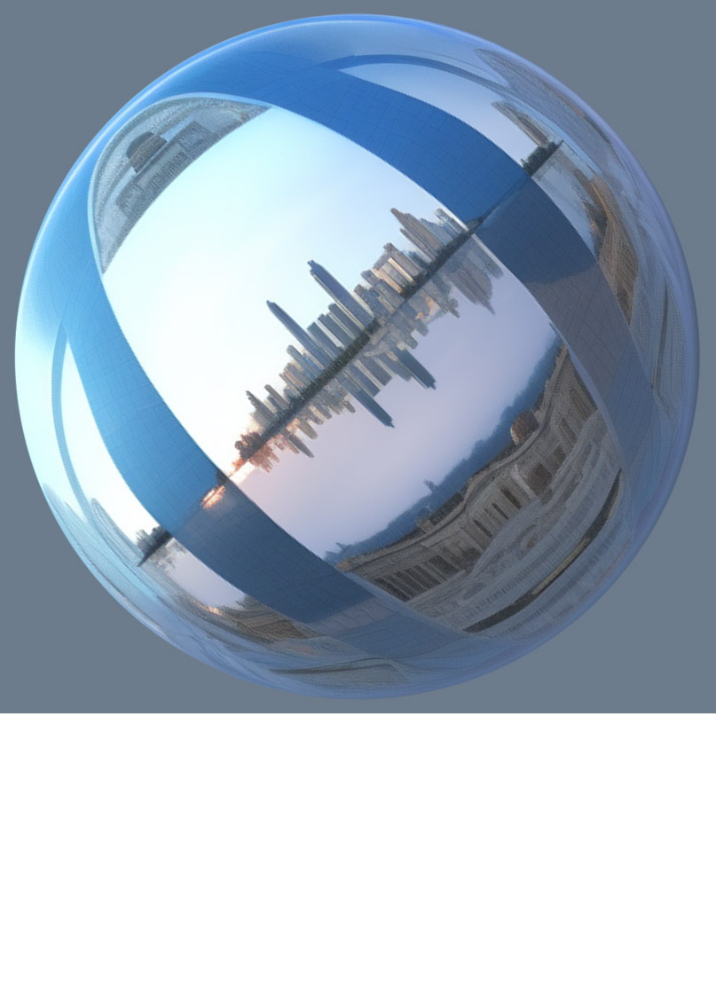
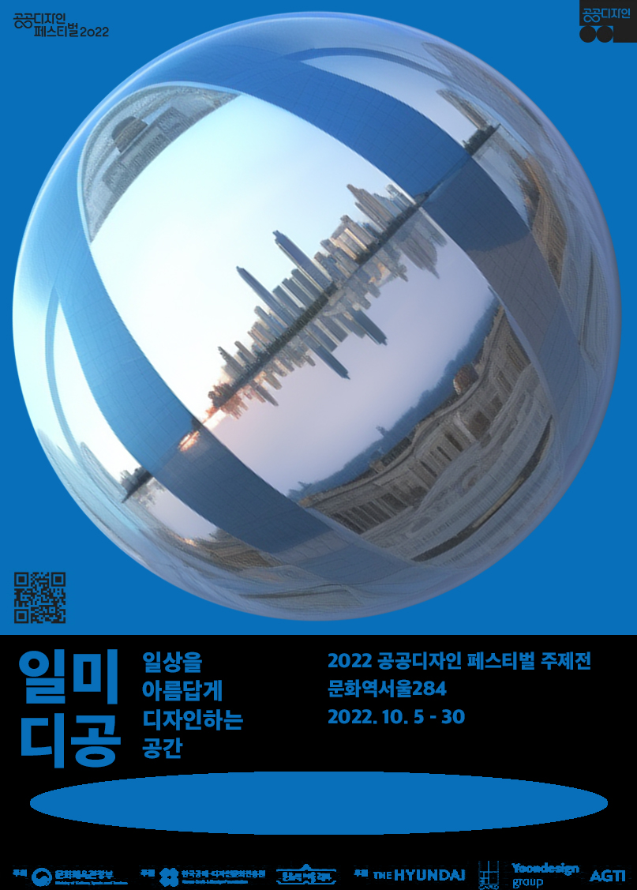

프로젝트 요약
이 프로젝트에서 주체성은 언어 기반 인공지능이 레퍼런스없이 스스로 도출해낸 텍스트 결과물을 말한다. 언어 기반 인공지능이기에 시각화를 직접 수행할 수는 없지만, 상세한 지시를 텍스트로 내리는 것은 가능하다. 따라서 인간인 내가 인공지능의 지시를 수행하는, 시각화의 대리자가 된다. 인공지능이 어느 부분까지 구체적으로 지시할 수 있었는지, 또 그렇게 하기 위한 방법은 무엇이었는지 서술한 내용을 발췌한다. 또한 내가 인공지능의 지시를 자의적으로 판단한 부분과 지나치게 직접적으로 요구한 부분을 모아 그 한계성을 드러낸다.
AI의 주체성이 잘 드러난 부분
"포스터 디자인을 해보겠습니다! 포스터는 시각적으로 매력적이고 효과적인 메시지 전달을 위해 중요한 요소를 포함해야 합니다. 다음은 포스터 디자인을 위한 몇 가지 단계와 팁입니다:"
↘ 단계
인공지능은 목적 파악, 콘셉트 개발, 레이아웃 설계, 컬러 선택, 폰트 사용, 이미지와 일러스트 활용, 시각적 요소 강조, 피드백과 수정이라는 세부 설계를 항목화하여 제시한다. 과정을 세분화하는 것은 이 프로젝트에서 중요하다. 단순한 과정에서는 상세한 설정이나 디테일을 생략한 채, 품질 낮은 결과물을 도출해 낼 확률이 높기 때문이다. 분화된 각 항목을 각각 높은 수준으로 달성할수록 최종 결과물의 완성도가 높아진다.
"포스터의 레이아웃을 계획할 때, 다음과 같은 접근 방식을 고려해볼 수 있습니다:
◉주요 메시지 강조: 포스터의 레이아웃에서는 주요 메시지를 강조하는 것이 중요합니다...(후략)"
↘ 계획
언어기반 인공지능이 잘 수행할 수 있는 행위는 설계와 계획이기 때문에, 그러한 단어를 지시문에 포함시켜 주는 것이 유리하다. 인공지능의 주체성은, '인공지능이 얼마나 구체적으로 과제를 설계할 수 있느냐'와 비례한다.
"폰트 선택은 행사의 분위기와 컨셉을 반영하면서도 가독성과 시각적 효과를 고려해야 합니다. (~중략~)산세리프 폰트 중에서도 가독성이 좋은 폰트를 선택할 수 있습니다...(후략)"
↘ 논리
Chat GPT는 폰트에 대해 구체적인 폰트명과 체계적인 구성을 제시할 수 있었다. '간결하면서도 읽기 쉽게 표시되어야 한다는 근거에 따라 산세리프 중에서도 가독성이 좋은 폰트를 선택하라'고 답변한 점에서, 인공지능이 논리를 시각적 요소에 대입할 수 있음을 증명할 수 있었다.
"네, 이미지를 활용하는 방법에는 다양한 창의적인 접근 방식이 있습니다. 여기에 몇 가지 아이디어를 제시해드리겠습니다...(후략)"
↘ 창의성
Chat GPT는 디자인의 시각화라는 측면에서, 이미지를 활용하는 방법론에 대해 구체적으로 이끌어낼 수 있었다. 그러나 그것이 '창의적'인지 검증해볼 필요가 있다. 추상, 3D, 일러스트레이션, 그래픽 디자인이라는 답변은 1차원적이고 추상적이다.
"◉비대칭적인 비주얼: 기존의 포스터에서는 대부분 중앙에 건물이나 풍경을 배치하는 경우가 많습니다. 하지만 비대칭적인 배치를 시도하여 더 흥미로운 시각적 효과를 얻을 수 있습니다...(후략)"
↘ 차별화
위, '창의성'의 측면에서 발견할 수 있었던 문제점을 보완하는 대목이다. 막연하게 '창의적'인 방법을 생각해내라고 질문하는 것보다 차별성, 즉 기존의 방식과 다른 방식을 요청하면 구체적이고 실효성있는 답변을 얻을 수 있다.
"◉형태의 변형: 풍경의 형태를 변형하여 비정형적인 모습을 만들어낼 수 있습니다. 예를 들어, 건물이나 자연 요소들을 왜곡시켜 독특한 형태로 나타내거나, 비대칭적인 배치를 시도하여 풍경을 비정형적으로 표현...(후략)"
↘ 심화
위, 차별화 단계에서 좀 더 나아가 특정 항목에 대해 심화하도록 유도하는 질문으로, 모호하고 추상적인 방법을 구체화할 수 있다.
그래픽의 경우, Stable Diffusion 이라는 이미지 기반 인공지능에게 프롬프트를 입력해 생산했다. 입력한 프롬프트는 다음과 같다:
the hdri ball that reflects the super realistic hyper city-landscape which is the public place, the city-landscape includes the roads, be positioned just right in the middle, white back ground, cinema 4 d, a 3D render, generative art, hyper realistic, 8k, unreal engine, highly detailed, hd8k, dramatic lighting, trending on artstation, black and white.

"도시의 현대적이고 동적인 면을 나타내려면 다이내믹한 컬러 팔레트를 활용해보세요. 밝고 선명한 컬러를 사용하여 활기찬 분위기를 전달할 수 있습니다. 예를 들면 레드, 오렌지, 황록색과 같은 화려한 웜톤 컬러가 도시의 활발함과 열정을 나타내는 데 도움이 될 수 있습니다."
↘ 색상
색상과 같은 디자인의 직관적 영역에 대해서도, 나름의 논리와 연결하여 답변을 제시한다. 레드, 오렌지, 황록색이라는 난색 계열을 '활발함, 열정'과 같은 추상명사에 대입할 수 있음을 드러낸다.

"저의 첫 번째 설명대로 화이트를 선택할 것을 추천드립니다. 화이트는 블루그레이와의 조화로움을 강조할 수 있으며, 깔끔하고 현대적인 느낌을 전달할 수 있습니다. 블루그레이의 차분하고 중립적인 톤과 화이트의 깨끗하고 밝은 톤은 시각적인 균형을 이루며, 전체적인 디자인에 선명함과 명확성을 부여할 수 있을 것입니다."
↘ 화이트
Chat GPT의 주체성을 끌어내려는 시도가 잘 드러나는 대목이다. 화이트와 블랙을 선택하는 것은 사실 지극히 직관적이고 임의적인 행위이다. 디자인이라는 분야에는 이러한 '직관'에 의해 시각화할 수 있는 영역이 넓다. 이 프로젝트에서는 '직관'에 의한 디자인까지도 되도록이면 반영할 수 있게끔 유도한다. 
인간의 개입이 포함된 부분
"파란색은 혁신과 창조를 강조할 수 없는 색이야?"
"행사명을 굳이 그렇게 크게 적을 필요가 있을까?"
"그래 좋은데, 하나의 포스터에 너무 여러가지 폰트가 사용되면 난잡하니까 하나로 통일하는 건 어때?"
"굵기가 너무 흔하면 눈에 안 들어오잖아."
"그냥 그래픽이 상단에 배치되면 어때?"
"상단에 커다랗게 그래픽이 들어가니까 하단 배치가 좋겠네?"
"일미공디 좋은데, 문구 순서가 '일상을 아름답게 디자인하는 공간' 이니까 일미디공이 더 적절하지 않을까?"
"'일상을 아름답게 디자인하는 공간'이라는 문구가 지금 두 줄로 나뉘어 있으니까 '일미디공'도 두 줄로 배열하는 건 어때?"
"이 포스터의 폰트를 Sandoll 고딕 네오1으로 설정하는 것은 적합해?"
↘인간의 개입이 심하게 드러난 부분이다. 이 내용의 핵심은, 디자인이라는 영역이 결코 '논리'로만 이루어지지 않는다는 사실에서 야기한다. 빨간색 대신 파란색을 쓴다든가, 폰트를 특정한 웨이트로 통일한다든가, 그래픽의 위치를 위에서 아래로 바꾼다는 등의 시각화는 인간의 직관 내지 기호에 의해 결정된다. 따라서 '길몸삶터 포스터'라는 명확한 결과물에 최대한 유사하게 도달하기 위해 자의적이고 직접적으로 개입한 부분은 인공지능의 한계점인 동시에, 감안할만한 사항이 된다. 오히려 이러한 강압적 요구에 대해 인공지능은 납득해야한다면 납득할만한 이유를 보충하고, 납득하지 못한다면 끝까지 자신의 생각을 고수하는 태도를 보여 인상깊었다.
